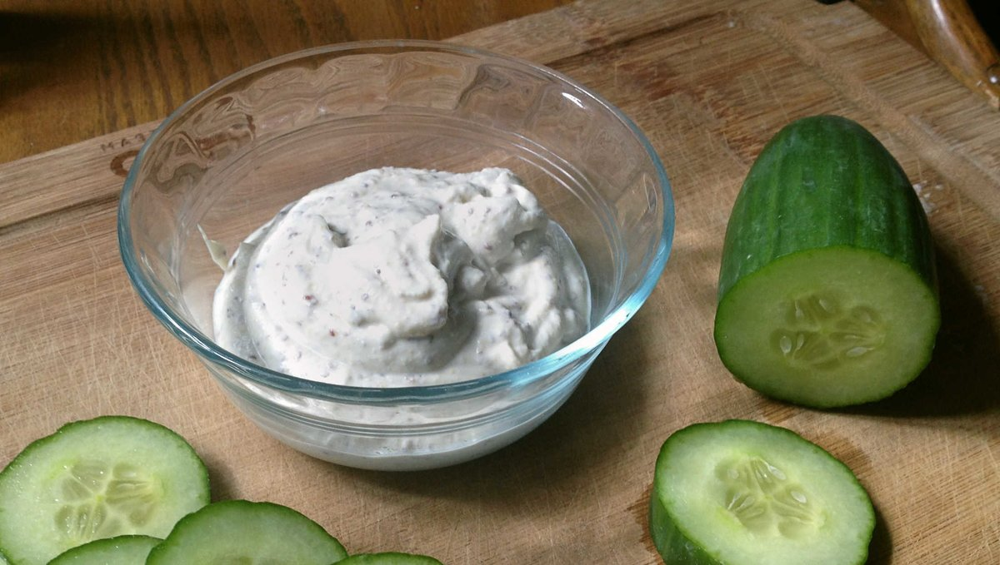

veganaise
1.5 cup — 5 minutes
Making mayo is easy. This is a basic recipe that doesn't take long to prepare, and that requires few tools.
It's possible to add other spices and ingredients to augment the flavor, like smoked paprika, garlic or fresh herbs. This recipe lends well to substitutions:
Substitutions
Oil : It's possible to use other neutral oils like sunflower oil, but we wouldn't recommend using olive oil as it will impart too much flavor.
Traditional mayo : This recipe uses less oil than the average mayo recipe. We used soft tofu to have a thicker mixture to avoid adding extra oil, for a richer veganaise you can use soy milk or other plant milks. To do this, mix your ingredients in the order listed in the recipe (switching the tofu for 250 ml or 1 cup plant milk), then pour 350 ml to 595 ml (1 1/2 to 2 1/2 cups) of oil in a slow, and steady stream with the blender running. The mayo will thicken after ~4-5 minutes of blending.
Mustard : Instead of using prepared mustard, you can sub with 5 g (1 tsp) of mustard powder. If you have a spice grinder or a coffee grinder, you can grind your own mustard powder from whole mustard seeds. In this recipe, we used old style dijon mustard with mustard seeds, which explains the texture present in the veganaise. If you want to know how to make old-style dijon mustard, check out my recipe.
Sweetener : If you prefer sweeter venagaise, add 5 g (1 tsp) of a sweetener.
Vinegar : Substitute lemon for apple cider vinegar, using equal amounts.
 soft tofu250 g
soft tofu250 g canola oil60 ml
canola oil60 ml apple cider vinegar15 ml
apple cider vinegar15 ml dijon mustard30 g
dijon mustard30 g salt1.25 g
salt1.25 g
veganaise
- Place the 250 g (1 cup) of soft tofu, 15 ml (1 tbsp) apple cider vinegar, 30 g (2 tbsp) dijon mustard and 1.25 g (1/4 tsp) salt in a blender and process until smooth. Add 60 ml (4 tbsp) of canola oil, and continue to blend for 1-2 minutes